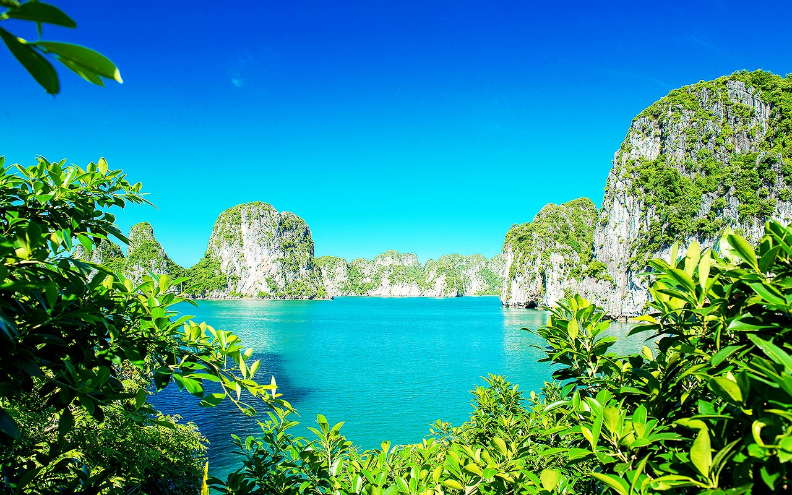
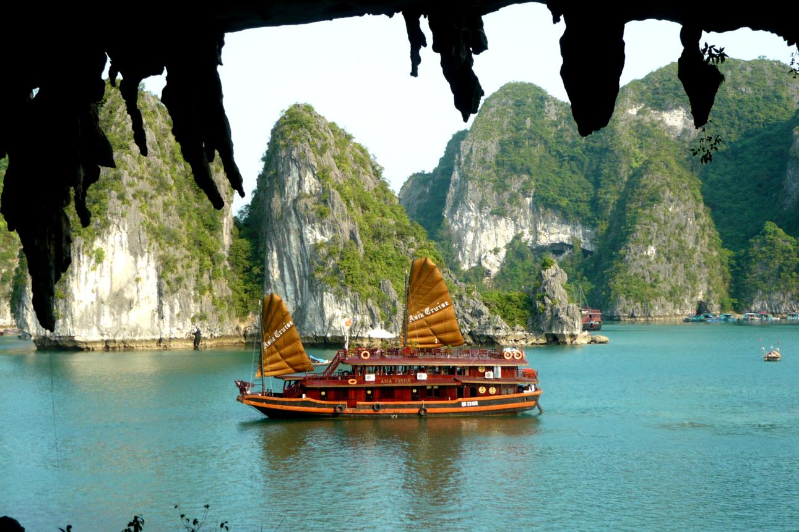
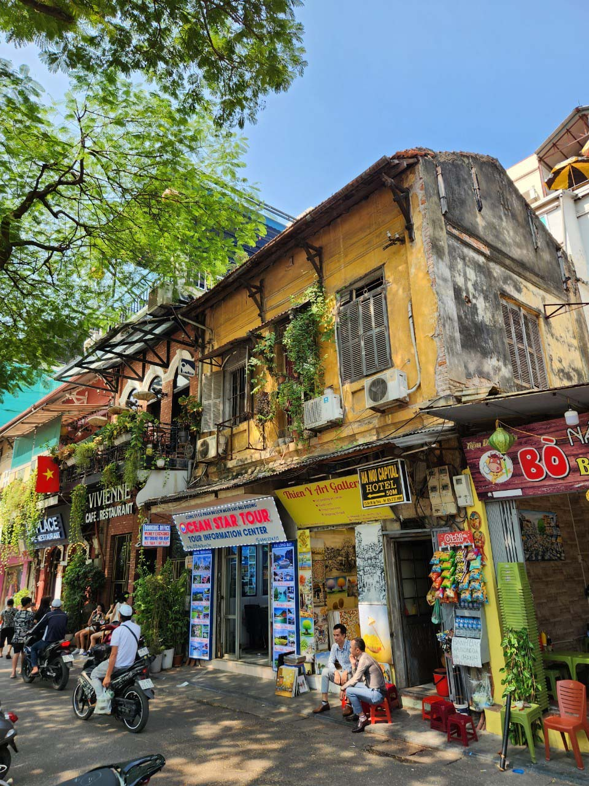

Du khách nên trải nghiệm du thuyền trên Vịnh Hạ Long để chiêm ngưỡng hàng nghìn hòn đảo đá vôi kỳ vĩ giữa làn nước xanh ngọc.
Bạn cũng có thể khám phá các hang động nổi tiếng như hang Sửng Sốt, động Thiên Cung hoặc chèo kayak để tận hưởng vẻ đẹp thiên nhiên gần hơn.
Hạ Long nổi tiếng với các món hải sản như tôm, cua, ghẹ, mực và đặc biệt là chả mực – món ăn đặc sản trứ danh.
Bạn có thể ghé các nhà hàng ven biển hoặc chợ hải sản để thưởng thức hương vị tươi ngon và đậm đà của biển.
Hạ Long không chỉ nổi tiếng với cảnh đẹp mà còn gắn liền với nhiều truyền thuyết, đặc biệt là câu chuyện Rồng Mẹ hạ xuống giúp người dân đánh giặc.
Tên gọi “Hạ Long” mang ý nghĩa “Rồng đáp xuống”, phản ánh niềm tự hào và tín ngưỡng dân gian của người Việt.
Khu vực này còn lưu giữ nhiều giá trị văn hóa của ngư dân vùng biển thông qua lối sống và phong tục truyền thống.
Các lễ hội biển và hoạt động văn hóa địa phương góp phần tạo nên sức hấp dẫn riêng cho Hạ Long.
Vịnh Hạ Long là di sản thiên nhiên thế giới với hàng nghìn đảo đá vôi có hình thù độc đáo, tạo nên khung cảnh kỳ vĩ hiếm có.
Làn nước trong xanh, hệ sinh thái phong phú cùng các hang động huyền bí khiến nơi đây trở thành điểm đến nổi bật của Việt Nam.
Du khách có thể ngắm bình minh và hoàng hôn trên vịnh – những khoảnh khắc tuyệt đẹp và đáng nhớ.
Ngoài ra, các bãi biển như Bãi Cháy cũng mang đến không gian thư giãn lý tưởng.
Hạ Long có khí hậu ven biển với mùa hè nóng ẩm, mùa đông mát mẻ; thời điểm đẹp nhất để du lịch là từ tháng 3 đến tháng 10.
Người dân địa phương thân thiện, mến khách và gắn bó với nghề biển từ lâu đời.
Sự chân chất, hiền hòa của con người nơi đây góp phần tạo nên trải nghiệm du lịch dễ chịu và đáng nhớ.


